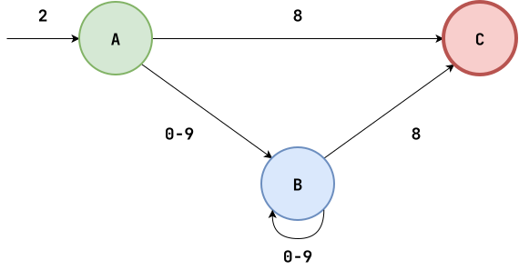
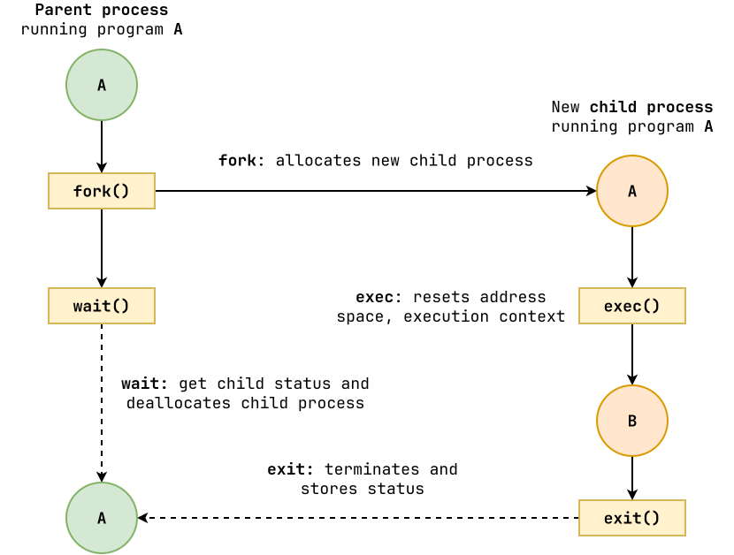

Review: Regular Expressions¶
A regular expression (aka. regex) is a sequence of characters that defines a search pattern that is used to match text.
grep and sed are examples of Unix tools (aka. filters) that use regular expressions to search text for patterns.

Regular Expressions: Pokemon¶
Given:
pikachu
bulbasaur
charmander
chespin
squirtle
meowth
togepi
oshawott
abra
jigglypuff
Write a regex to match:
-
All the strings
-
Only charmander and chespin
-
All the words with two t's
-
Words that don't start with a vowel
-
All words with two consecutive vowels
-
All words with two consecutive letters (same)
-
All words that begin and end with the same letter
-
All words with exactly 2 of r, s, or t
#!/usr/bin/env python3
import re
# 0. Read in pokemon data
# TODO: Review open (read data from file)
# TODO: Review with (closes file stream when done)
with open('pokemon.txt') as stream:
pokemon = stream.read()
# 5. All words with two consecutive vowels
# TODO: Review re.findall (returns list of matches)
# TODO: Review re.MULTILINE (^, $ match beginning and end of lines)
print('5. All words with two consecutive vowels')
for p in re.findall(r'^.*[aeiou]{2}.*$', pokemon, flags=re.MULTILINE):
print(p)
print()
# 6. All words with two consecutive letters (same)
print('6. All words with two consecutive letters (same)')
for p in pokemon.splitlines():
if matched := re.search(r'(.)\1', p):
print(p)
print()
# 7. All words that begin and end with the same letter
print('7. All words that begin and end with the same letter')
for p in pokemon.splitlines():
if matched := re.search(r'^(.).*\1$', p):
print(p)
print()
# 8. All words with exactly 2 of r, s, or t
print('8. All words with exactly 2 of r, s, or t')
for p in pokemon.splitlines():
if matched := re.search(r'^[^rst]*[rst][^rst]*[rst][^rst]*$', p):
print(p)
print()
Processes: Life Cycle¶
A process is a loaded instance of a program; it is a unit of allocation.
import os
# Parent:
# fork -> wait
# Child:
# exec -> exit
os.system('ls -l')
# Parent can read Child's stdout
for line in os.popen('ls -l'):
print(line)

Requests: Web Scraping¶
Write Python code that does the following:
# Constants
URL = 'https://pnutz.h4x0r.space/courses/cse.20589.fa26'
# 0. Fetch data using curl
import os
with os.popen(f'curl -sL {URL}') as stream:
text = stream.read()
# 1. Fetch data using requests
import requests
response = requests.get(URL)
text = response.text
# 2. Extract title using regex
import re
if matched := re.search(r'<title>([^<]+)</title>', text):
print(f'Title is: {matched[1]}')
# 3. Extract images using regex
for img_source in re.findall(r'<img src="([^"]+)"[^>]*>', text):
print(img_source)
JSON: Wikipedia¶
Write a script that lists all the Wikipedia entries for a particular search term:
$ ./wikipedia.py python
1. Python
Look up Python or python in Wiktionary, the free dictionary. Python may
refer to: Pythonidae, a family of nonvenomous snakes found in Africa,
Asia, and
2. Python (codename)
Python was a Cold War contingency plan of the British Government for
the continuity of government in the event of nuclear war. Following the
report of
...
import pprint
import re
import sys
import requests
# Constants
HEADERS = {'User-Agent': __name__}
URL = 'https://en.wikipedia.org/w/api.php' # Discuss: APIs
PARAMS = {
'action' : 'query',
'list' : 'search',
'format' : 'json',
'srsearch': sys.argv[1]
}
# Main Execution
def main():
# Review: keyword arguments
result = requests.get(URL, params=PARAMS, headers=HEADERS)
# Discuss: json
data = result.json()
# Discuss: pretty printing
#pprint.pprint(data)
# Discuss: chaining operators
articles = data['query']['search']
# Discuss: sorting by key, lambda
articles = sorted(data['query']['search'], key=lambda o: o['wordcount'])
# Review: slicing, enumerate
for index, entry in enumerate(articles[:5], 1):
# Discuss: fence pattern
if index > 1:
print()
title = entry['title']
# Discuss: re.sub
snippet = re.sub(r'<[^>]+>', '', entry['snippet'])
# Discuss: formatting
print(f'{index:4}.\t{title}\n\t{snippet}')
if __name__ == '__main__':
main()